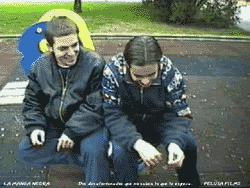

Kit de coloque del Pequeño Camello
 De: La Frikipedia, la enciclopedia extremadamente seria.
De: La Frikipedia, la enciclopedia extremadamente seria.
Así aparecían en el spot publicitario.
El Kit de coloque del Pequeño Camello ® es un producto PORRODUCTO de Lil´ Camel que empezó a comercializarse allá por el 1859 d.C. Contiene droga en su estado más puro, así que este producto PORRODUCTO (qué originalidad, repetir el mismo cutre-chiste dos veces en el mismo párrafo) no es apto para menores de 18 (meses).
Patente
Pendejoliev sacándose una mini-papelina.
Estaba Pendejoliev (sí, leéis bien, Pendejoliev, el de la Fiestorras Cuánticas de proporciones PORROPORCIONES titánicas, sin el riesgo de quedar sin colocarse debido a que nuestros coleguitos se "fundan" toda la farla.
A partir de entonces, en 1849 d.C. ; fundó la empresa Lil´ Camel, que, desde aquella época, lleva pervirtiendo y corrompiendo a nuestros jóvenes (y no tan jóvenes). We luv U, Lil´ Camel!!!!
Ingredientes para preparar un Kit de coloque del Pequeño Camello rico rico, y con fundamento
- Tungsteno mezclado con remolacha. - 300g en una disolución 2M.
- LSD. - Un camión.
- Hachís. - 0,00000012 g.
- Mariguana (para toda la semana). - Un par de hojas.
- Cocaína. - Con un fardo basta.
- Éxtasis (que no estasis). - Un par de pastis.
- Hagua. - 1/4 L.
- Alcohol. - 1/2 L.
No olviden mezclar todo en una cazuela de madera. En las modernas ollas a presión lo único que conseguirán será una mierda empapelá.
Walkthrough rápido
 Coleguillas que están siguiendo el Walkthrough
- 1: Cómprese un paquete del Kit de coloque del Pequeño Camello en su supermercado más cercano.
- 2: Regatee con su tendero.
- 2.1: En caso de que su tendero no quiera regatear, lárguese por patas de su supermercado/tienda/badulaque.
- 3: Vaya a su casa.
- 4: Llame a sus yonquiamigos para hacer una quedada en su casa.
- 4.1: Es indispensable que acudan hembras a la quedada.
- 5: Espere en su casa a que lleguen sus invitados, preferentemente visualizando los diales 120-122 de
Digital +.
- 6: Cuando lleguen, proponga a los presentes de realizar una gran bacanal (propóngaselo a alguien de su sexo opuesto, lógicamente; no queremos malentendidos).
- 6.1: Usted se encuentra sin dentadura, vaya a su dentista.
- 7: Ya está de vuelta, abra el paquete y dispóngase a disfrutar.
- 8: Si nota que todo se vuelve hiperrealista, es que el Kit de coloque del Pequeño Camello no estaba defectuoso, sino que es 100% funcional.
- 9:FIESTAAAAAAAAAAAAAAAAAAAAAAAAAAAAHHHHHHHHHHHHHH!!!!!
© Profesor Maximus Kat Gato, de la universidad computense complutense de Felinorrepública. All rights reserved.
Efectos secundarios (o primarios, mire usté)
Otros productos de la misma gama
En el lateral derecho de la caja, nos indica en hebreo perfectamente los efectos segundarios del consumo descontrolado del Kit de coloque del Pequeño Camello:
sarna, fiebre amarilla, cólera, cáncer, sida, gonorrea, sífilis, gripe aviar, pulmonía, malaria, necrósis, enfermedad del sueño, dolor de muelas, la gota, hemorroides, inflamaciónes, flebosis,el virus-T, el virus-G, osteoporosis, rabia, resfriado, hemorragia anal, e Hipopotomonstrosesquipedaliofobia en el esternocleidomastoideo.
Aquí tenemos a Gilgamesh haciendo marketing del Kit de coloque del Pequeño Camello
Enlaces Externos
Autor(es):
- Nexo
- Doctor grijander
- Max Slug
- Aque
- Epikurolibre
- Roms
- Fasgort
- Azulejos
- Nadaquever
- Tom Tanks
Frikipedia 2005-2016, Licencia
GFDL 1.2 - Extraído por FrikiLeaks